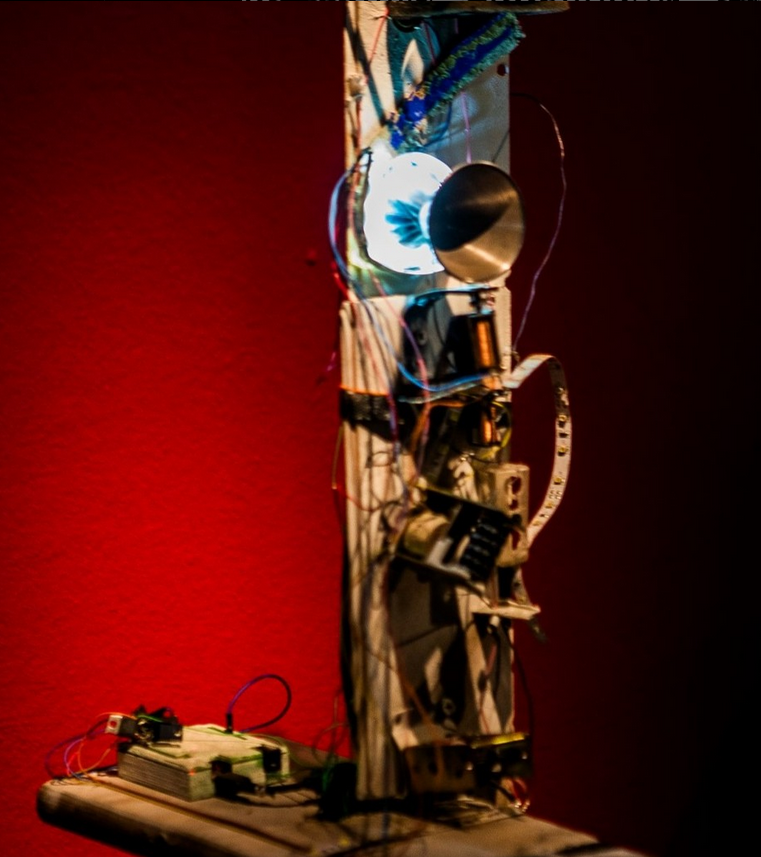
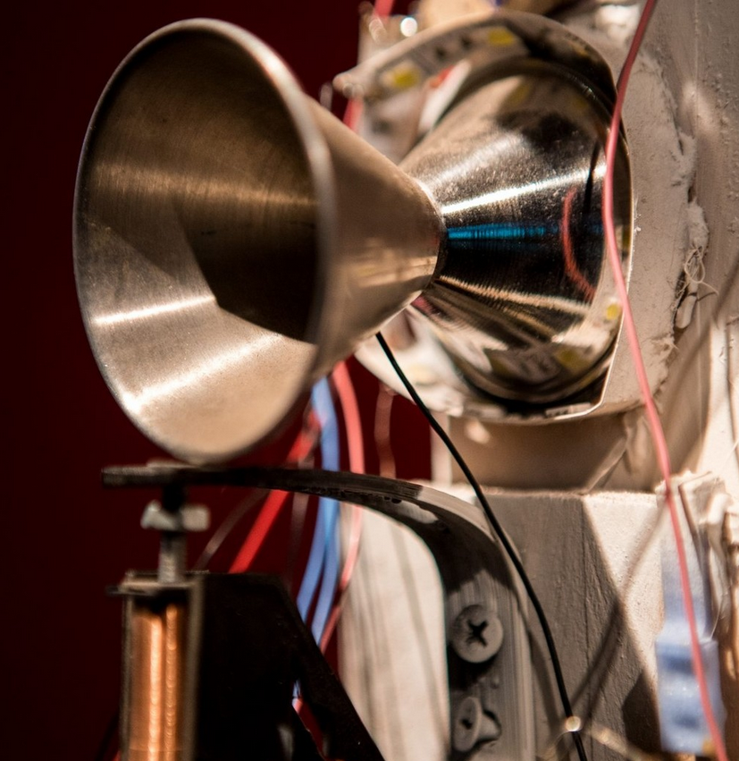

"Ruina, Santa algoritmo - 2023"
 
Ruina y Santa Algoritmo es un sistema compuesto por elementos que se mueven, se iluminan y suenan gracias a un algoritmo. Entre el caos y el devenir de este collage de elementos un contador electrónico [tic-tac] que nos muestra números, vaga referencia a la cantidad de veces que sonó mientras terminaba de degradarse nuevamente a basura. Junto a estas basuras esta santa algoritmo para recordarnos la parte mágica de estas instrucciones revitalizadoras.
"Sonido, Algo se mueve - 2022"


Esto es producto de la investigación sobre las interfaces sonoras, como estas afectan al cuerpo durante la improvisación o la interpretación y viceversa.
"Union(){ - 2022"


Materializar el código y a la vez generar materialidad a través de la programación
con la computadora y no en la computadora. Pensarla como colaboradora y no solo herramienta. E incluso posibilitarle trabajar. La materialidad de las piezas se logra a través de software y no se podría de otra forma generar tan rápida o compleja de forma manual, esto hace que la computadora sea una herramienta tan fundamental que escapa a la pura definición de herramienta. Entran en juego los conceptos de vida artificial, como interactuamos más allá del deseo humano de crear vida, sino el foco en cómo convivimos con estos nuevos seres. Esto nos lleva a repensarnos como tecnología, en este caso obsoleta en algún punto, al verme trabajando junto con la computadora.
"Ikebana - 2021"

Ikebana es un aglomerado de viejos monitores CTR, que muestran textos e imágenes de muy baja resolución generadas a partir de código
Atravezada por "glitches" (imágenes generadas con cortocircuitos e interferencias) visuales interactivas por medio de perillas y cables Este es un compost de basura tecnológica que con la adición de algunos nuevos nutrientes crece metafóricamente como vegetal salvaje. aca me encontre en un estado ludico de experimentación. entendiendo el juego como lo mas serio, como un ritual que resembla al ritual del ikebana.
Ikebana es un aglomerado de viejos monitores CTR, que muestran textos e imágenes de muy baja resolución generadas a partir de código
Atravezada por "glitches" (imágenes generadas con cortocircuitos e interferencias) visuales interactivas por medio de perillas y cables Este es un compost de basura tecnológica que con la adición de algunos nuevos nutrientes crece metafóricamente como vegetal salvaje. aca me encontre en un estado ludico de experimentación. entendiendo el juego como lo mas serio, como un ritual que resembla al ritual del ikebana.